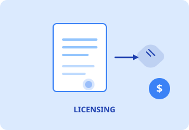
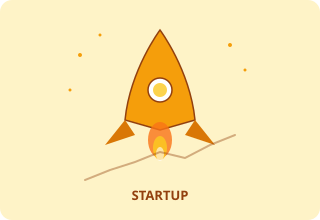
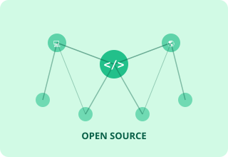

Every innovation is different. The right pathway depends on your technology, your goals, and who benefits most from access. All three are legitimate outcomes of the technology transfer process.
Find Your Fit
| Consider... | Licensing | Startup | Open Source |
|---|---|---|---|
| You want to stay in academia | ✓ Best fit | Possible but demanding | ✓ Best fit |
| Your tech needs significant capital to develop | ✓ Industry provides it | Requires fundraising | Community-driven |
| You want maximum public access | Partial (non-exclusive) | Partial | ✓ Best fit |
| You want to generate personal revenue | ✓ Royalties | ✓ Equity/salary | Indirect only |
| You want to lead the direction of development | Limited post-license | ✓ You're in charge | ✓ As maintainer |
| Technology requires regulatory approval (FDA, etc.) | ✓ Partner handles it | You must navigate it | Community handles it |

In a licensing arrangement, UVM retains ownership of the intellectual property while granting a company the right to use, develop, and sell products based on your invention. In return, you and UVM receive royalties and fees over the life of the license.
This is the most common technology transfer outcome and works especially well when the technology requires large capital investment to develop — investment that industry is better positioned to provide than an academic lab.
One company gets sole rights. Common in pharma and med-tech where development costs are massive and a single player needs assurance of return before investing.
Multiple companies can license the same technology. Better for broadly useful tools, software, or enabling technologies where broad adoption creates more societal value.
Exclusive rights in a defined sector or region (e.g., veterinary applications only, or North America only), leaving other fields or territories available for separate deals.

If you want to lead the development of your technology and build a company around it, a startup spinout may be the right path. UVM licenses IP to your new company (often taking equity in return), and you become both inventor and entrepreneur.
UVM has supported 39 startups over the past decade. The ecosystem includes funding programs, accelerators, mentors, and connections to Vermont's growing innovation community.
A national 7-week program that teaches customer discovery. UVM teams compete for national cohort spots. Required for many SBIR Phase II applicants.
Vermont's early-stage biomedical startup accelerator. Provides mentorship, network access, and strategic guidance for life science spinouts.
Early-stage seed funding for UVM-based startups. Bridges the gap between academic research and investor-ready technology.
Student-involved experiential learning program. Pairs student teams with faculty innovations to conduct market research and commercialization planning.

Open-source release is a recognized, formal technology transfer outcome — not a fallback for technologies that couldn't be licensed. When broad adoption, public benefit, and community contribution matter more than revenue, open source is often the best choice.
Federal funding agencies like NSF increasingly expect research outputs to be openly available. Open-source release also demonstrates impact, builds your academic reputation, and can attract commercial collaborators who want supported or enterprise versions.
Anyone can use, modify, and distribute — including in commercial products without sharing source code. Maximum adoption, minimum friction.
Like MIT but includes explicit patent grants. Often preferred for research tools where patent conflicts are a concern.
Derivative works must also be open source. Prevents commercial entities from "closing" your code without contributing back. Stronger community protection.
For datasets, documentation, educational materials, and research outputs. CC-BY requires attribution; CC0 is public domain.
Talk to UVM Innovations first. Even for open-source release, you should formally disclose your invention and work with UVM to waive commercial claims and select the right license. This protects you, future contributors, and the University.